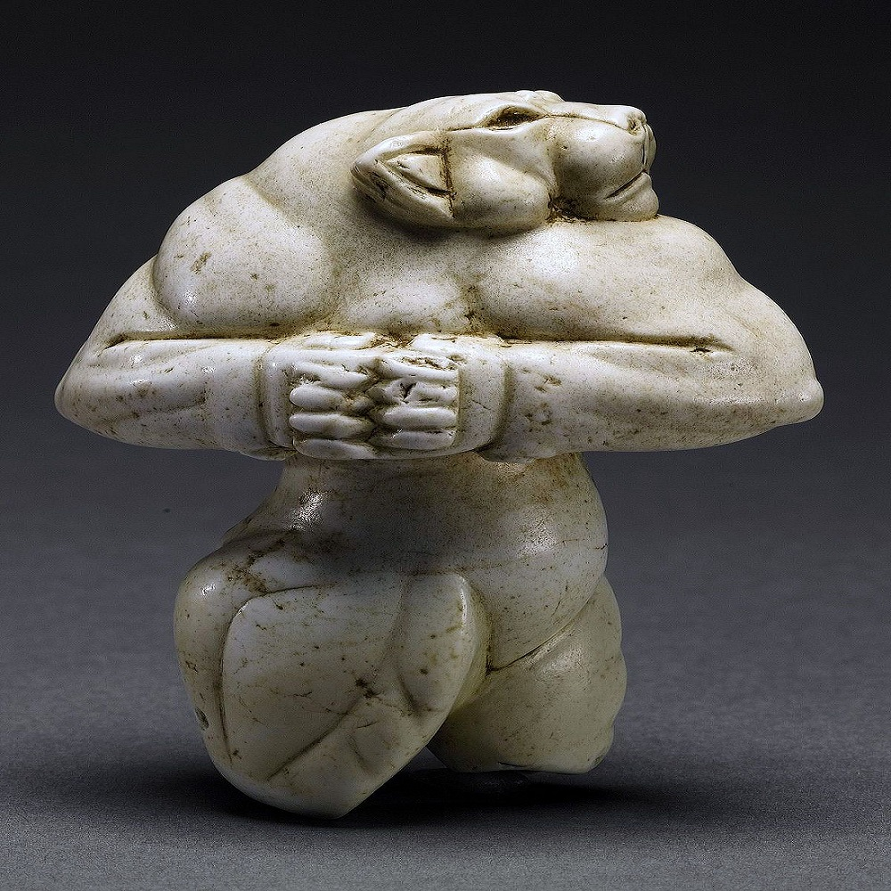

SSe talló en la época del Imperio elamita (2.700 a. C. - 539 a. C.) situado en el sud-oeste del actual Irán y fue adquirida en 1948 por el coleccionista estadounidense Alastair Bradley Martin y su esposa. El 5 de diciembre de 2007 fue vendida por la casa de subastas Sotheby's de Nueva York por 57,2 millones de dólares.
Leer mas...Se cree que representa a una diosa de culto por su forma antropomorfa y vigorosa. Se piensa que podría haber sido usada como un collar a modo de talismán.
El mercado internacional de antigüedades es sin duda el más fascinante y desconocido de todo el mundo del Arte. De hecho, puede incluso ser el lugar perfecto para criminales, falsificadores y expoliadores, que operan en casi cualquier país con un patrimonio de interés.
Se talló en la época del Imperio Elamita 2700-539 a.C. en el sudoeste del actual Irán. Se cree que representa a una diosa de culto por su forma antropomorfa y vigorosa
La figura es una combinación brillante de forma animal y postura humana.El nuevo propietario tendrá la distinción de poseer una de las obras más antiguas, raras y maravillosas del mundo antiguo